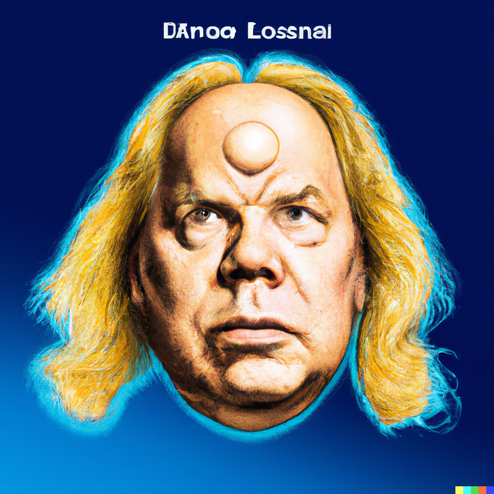

Here are some portraits of our founding members, note their healthy shrim infused glow!
Do you crave the brother-sisterhood of the shrim colony? Yes, you might be a meak and dirty mammal now, but soon you can become a crustacean and leave your weak and sad human husk behind. Let the healing begin!
You are welcome brother-sister. You are loved. We are your family now. The colony grows strong.
 |
|
|  |